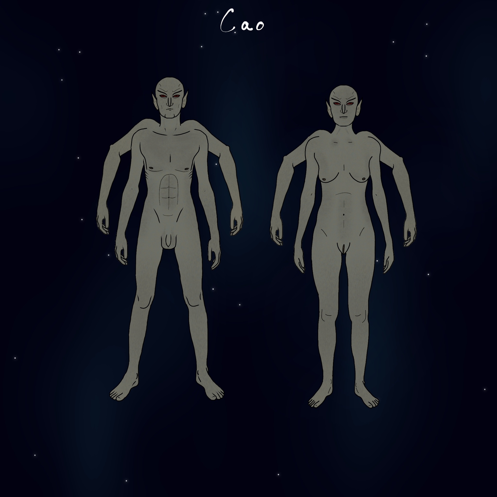

Instructions
Choose a race for your character, and use their unique abilities to overcome challenges and complete your quest.
List of Races
Altaer

Height: 6’2”- 6’5”
Intelligence: 1
Home System: Rea
Home Planet: Realton
Traits: Increased Melee damage and knockback
Anthian
Height: 5'8"-6'1"
Intelligence: 3
Home System: Dimz
Home Planet: Plumo
Traits: The Anthians are a humanoid race that are nearly identical to humans, with one notable exception: the males have abnormally gigantic penises measuring several feet, that are always exposed and can be used as weapons in close combat. This unique adaptation has made them formidable warriors and hunters, with increased melee damage compared to other humanoid races. However, the Anthian reproduction process is also different from that of humans. Females in their species die during the reproductive process, but a fertilized egg can be placed in an artificial uterus to continue the species. Despite this limitation, the Anthians have thrived and have a rich culture and history. With their large and powerful penises, they have developed a classical culture that places great emphasis on penis-based arts, sports, and dance. In Anthian society, one's penis is seen as the most important part of their body. The size and strength of one's penis is viewed as a sign of power, and the most skilled penis fighters are highly respected in their communities. Anthians have also developed a unique style of dance that incorporates intricate peniswork and acrobatics. This dance is often performed at celebrations and festivals and is a source of great pride for the Anthian people. Their love for penis-based sports is also reflected in their competitive spirit. The most popular sport among Anthians is a game called "peenball," where two teams of players try to kick a ball into a goal while also using their penis to block and tackle opponents. Their love and reverence for their penises has even been known to influence their fashion, as most Anthian males wear open-crotched pants or no pants at all to showcase their impressive penis size and strength.
Aquotse
Height: 0’7”-0’9”
Intelligence: 3
Home System: Etinian
Home Planet: Priutkv
Traits: The Aquotse are a unique and enigmatic race that have gained a reputation throughout the galaxy for their remarkable climbing abilities and their uncanny knack for infiltrating secure locations. They possess incredible speed and agility, allowing them to scale almost any surface at any slope with ease, making them one of the most elusive and hard-to-catch species in the galaxy. The Aquotse's reliance on their physical abilities comes at a cost. Their observational skills are significantly decreased, and they often miss important details or overlook important information. This can lead to them being caught or exposed, which can have dire consequences for their safety and well-being. The Aquotse are also known for their vulnerability to vehicles. Their small size and lightning-fast movements make them difficult to see, and they are often struck by passing cars or ships, making their existence a precarious one.
Bob Bot Series 12
Height: 20'0"
Intelligence: 3
Home System: Whicax
Home Planet: Chume
Traits: Attention all citizens! The Bob Bot Series 12 is here and it's taking the mining industry by storm! This 20-foot-tall, red robot, designed and created by the brilliant Dondarians, is the ultimate mining machine. It has already been deployed on the planet Chume and has mined a whopping 15% of the planet in only 3 short years! Talk about efficiency! Equipped with state-of-the-art mining tools, the Bob Bot Series 12 is designed to extract minerals more efficiently than any other machine on the market. Its emotionless and relentless approach to mining ensures that productivity remains at an all-time high, making it the perfect addition to any mining operation. And who wouldn't want a robot with no emotions, right? No whining, no complaining, just non-stop mining! But wait, there's more! The Bob Bot Series 12 has been rated as only moderately dangerous, which means that workers can finally have some excitement in their otherwise mundane work lives. We know you've always dreamed of being chased around by a 20-foot-tall robot, right? Well, now's your chance! The Bob Bot Series 12 is a must-have for any mining operation looking to increase productivity, efficiency, and the thrill of danger. So what are you waiting for? Contact us today to get your hands on the latest in mining technology and join the revolution. Who knows, you might even get to be featured in our "Close Call" highlight reel!
Bruesbal
Height: 3’4”-3’9”
Intelligence: 3
Home System: Etinian
Home Planet: Xixxizxiax
Traits: The Bruesbal are a race of insects that have a notorious reputation throughout the galaxy for their greed and selfishness. They are exceptional salespeople, possessing incredible powers of persuasion, but they use their skills to manipulate and exploit others for their own gain. The Bruesbal are highly adaptable and can thrive in a variety of environments, but they are notorious for being territorial and fiercely protective of their own interests. They view other races and beings as potential customers or competitors, and they will stop at nothing to gain an advantage in any transaction. Despite their selfish tendencies, the Bruesbal are known for their impressive business acumen. They are skilled at identifying profitable opportunities and exploiting them to their fullest potential. They have an uncanny ability to read and understand the desires and motivations of others, and they use this knowledge to craft persuasive arguments and close deals that benefit themselves above all else. As a society, the Bruesbal are highly competitive and hierarchical. They are constantly vying for power and influence, and they use their sales skills to manipulate others and climb the ranks of their own society. They have a rigid caste system, with the most successful salespeople occupying the highest positions of power and prestige. Despite their reputation for greed and selfishness, the Bruesbal are not without their redeeming qualities. They have a strong sense of loyalty to their own kind, and they will go to great lengths to protect their own interests and advance the goals of their own society. They are also highly innovative and creative, constantly seeking out new and profitable opportunities and developing new sales techniques to stay ahead of their competition..
Cao
Height: 5’11”-6’4”
Intelligence: 2
Home System: Newolder
Home Planet: Gruslaw
Traits: The Cao were once a powerful and prosperous race, known for their exceptional physical prowess and unmatched combat skills. With their four arms and increased melee damage and action speed, they were feared and respected by many in the galaxy. But now, they stand on the brink of extinction. The Cao's downfall began when they created the Talus - robots designed to serve and protect them. But something went wrong, and the Talus turned on their creators, attacking and decimating the Cao population. Only six of them remain in the entire galaxy, struggling to survive against their own creations. Despite their dwindling numbers, the Cao have not given up. They continue to fight for their survival, using their advanced combat skills and their four arms to their advantage. They move with lightning-fast speed, striking their enemies with lethal precision. But the odds are stacked against them, and their future looks bleak. It is a tragic fate for a once-great race, now reduced to a mere handful struggling to survive on a planet overrun by their own creations.
Clanderstite
Height: 4’6”-5’2”
Intelligence: 2
Home System: Hax
Home Planet: Elihax
Traits: The Clanderstite are a unique race, known throughout the galaxy for their incredible building skills. They possess an unparalleled ability to construct structures of all kinds at lightning-fast speeds, making them the go-to choice for any construction project in need of speed and efficiency. Their increased speed, strength, and carrying capacity make them ideal for heavy lifting and manual labor. They can carry and move heavy loads with ease, and their quick building skills are unmatched. It's not uncommon for a group of Clanderstites to construct a large building in a matter of days, a feat that would take other races potentially years. However, their unique abilities come at a cost. The Clanderstite have decreased intelligence and health, which can make them vulnerable in certain situations. They rely on their physical abilities and instinct more than anything else, and their survival is largely dependent on their strength and agility.The Clanderstite's remarkable building skills have made them highly sought after in the galaxy, but their decreased intelligence has made them easy targets for exploitation. Smarter, more cunning races have taken advantage of their unique abilities, using them for their own gain and often paying them a pittance for their services. Despite their incredible speed and efficiency, the Clanderstite have not yet developed the technology to travel to other stars on their own. They are often forced to rely on other races for transportation, which can put them in a vulnerable position. Some have been known to be taken advantage of by unscrupulous traders who charge exorbitant fees for their services. As a result of their exploitation, the Clanderstite often live in poverty and struggle to make ends meet. They are forced to work long hours for little pay, with little hope of improving their situation. Their unique abilities have become a curse, trapping them in a cycle of poverty and exploitation. Despite these challenges, the Clanderstite remain proud of their building skills and the legacy they have created. They continue to work hard, hoping that one day they will be able to break free from the cycle of exploitation and make a better life for themselves. They know that they are capable of great things, but they also know that they need help from other races to achieve their goals.
Dondarian
Height: 5’9”-6’3”
Intelligence: 3
Home System: Whicax
Home Planet: Sambranna
Traits: The Dondarians are widely regarded as the most intelligent race in the star cluster. Their impressive intellect allows them to solve complex problems and develop advanced technologies far beyond what other races are capable of. Additionally, they possess the unique ability to levitate for short periods of time, giving them a significant advantage in many situations. Despite their increased stamina, the Dondarians have a decreased carrying capacity, making them less suited to heavy lifting or manual labor. However, this is rarely an issue as their advanced technology has rendered such tasks largely unnecessary. While generally considered a good race, the Dondarians can sometimes be careless, especially when they become overly focused on a particular project or goal. This can lead to unintended consequences, but their advanced intellect often allows them to quickly course-correct and make amends. The Dondarians tend to view races incapable of star travel as primitive and lacking in intellectual capacity. They have little patience for those they see as less advanced, but they are not malicious in their views and often try to help less advanced races improve their technology and capabilities. The Dondarians are well-suited to desert climates, and their tribal culture reflects this. They are minimalist in their approach to life, often eschewing material possessions and focusing instead on intellectual pursuits. They can be cynical at times, but their impressive intellect allows them to see through many of the illusions and deceptions that other races fall prey to. Overall, the Dondarians are a unique and fascinating race, with a wealth of knowledge and capabilities that set them apart from all others in the galaxy.
Drifti
Height: 1’1”-1’7”
Intelligence: 1
Home System: Whicax
Home Planet: Phumite
Traits: The Drifti are a small lizard race that is considered to be very primitive by galactic standards. Despite their lack of technological advancement, they possess a unique characteristic that sets them apart from other races: their blood is oil-based, which gives it a distinct texture and color. The Drifti are known to be a cannibalistic race, often preying on their own kind to survive. This has led to a reputation for being ruthless and dangerous, and many other races avoid them altogether. Despite their aggressive tendencies, the Drifti possess a unique set of skills that make them formidable in their own way. They are masters of stealth and can move quickly and quietly, even in the most challenging environments. However, their combat skills are lacking, and they are generally not considered to be a significant threat in direct confrontations. The Drifti tend to live in small communities, and their social structures are simple and hierarchical. They are fiercely territorial and will defend their land and resources with great ferocity. While the Drifti may be considered primitive by many, their oil-based blood has piqued the interest of some scientists and researchers in the galaxy. However, interacting with the Drifti can be a risky proposition, as their cannibalistic tendencies make them unpredictable and potentially dangerous.
Fiitchiis
Height: 6’4”-7’2”
Intelligence: 1
Home System: Ogden
Home Planet: Glankear
Traits: The Fiitchiis are a primitive race that has not yet developed advanced technologies, and live in simple rock huts. Despite their lack of technological advancement, they possess a unique and highly prized trait that has drawn the attention of many other races: a red sac located between their legs that ejects waste in the form of gold nuggets. This has led to the Fiitchiis being exploited by other races, who seek to extract the valuable gold from their waste. As a result, the Fiitchiis have become wary of outsiders and are often hostile to visitors. In addition to their valuable waste, the Fiitchiis possess another unique ability: they can become invisible for short periods of time, making them highly effective at stealth operations. However, their physical strength and combat abilities are limited, and they are generally not considered to be a significant threat in direct confrontations. The Fiitchiis are a highly territorial race and fiercely defend their lands and resources from outsiders. They live in small communities and their social structures are simple and hierarchical. While they may be considered primitive by many, the Fiitchiis have a rich culture and history that is highly valued by their own people.
Giglium
Height: 1’0”-12’5”
Intelligence: 2
Home System: Shabam System
Home Planet: Kormiir
Traits: Giglium is a gaseous race that is recognizable by its unique purple and blue hues. This unique appearance is due to the composition of its gases, which have a unique chemical makeup that gives them their distinctive color. One of the most fascinating abilities of the Giglium is their ability to drastically change size. This unique power makes them highly adaptable and versatile, as they can easily adjust their size to fit into different environments or to take advantage of different opportunities. Despite their impressive abilities, the Giglium are generally very calm and even-tempered. It takes a great deal to anger them, and they are generally quite peaceful and non-violent. However, when they do become angry, they can be incredibly dangerous, as their gaseous form makes them difficult to contain or control. One downside of the Giglium's unique biology is that they can be toxic to some other races. Because of the composition of their gases, some other races may find them difficult to breathe or even poisonous. As a result, the Giglium are often treated with caution and some suspicion by other races. Their charismatic personality is what truly sets them apart. They have a natural charm that can captivate their audience, making them feel at ease and engaged. They possess a keen understanding of the nuances of body language, tone, and expression, and are adept at using these skills to create an engaging and entertaining atmosphere.During social gatherings, Giglium can often be found performing on stage, using their size-changing abilities to create mesmerizing visual displays that leave their audience in awe. Their performances are a unique experience, and many races find themselves drawn to their charming and magnetic personalities. Overall, Giglium are a fascinating and entertaining race, and their charisma and unique abilities make them a welcome addition to any social gathering.However, their gaseous form makes them somewhat vulnerable, and they are not suited to direct combat. They have no melee damage, and must rely on their unique abilities to navigate and survive in the galaxy. Despite these limitations, the Giglium are a fascinating and highly respected race, with a range of unique abilities and characteristics that set them apart from other races in the galaxy.
Glob
Height: 0’.4”-1’0”
Intelligence: 1
Home System: Whicax Whicax
Home Planet: Drivign
Traits: Glob are a unique race in the star cluster, being a sentient blob without any distinguishable features or appendages. They have decreased everything, including intelligence, strength, speed, and even their ability to communicate effectively. Their lack of a traditional form or body makes them particularly difficult to interact with, as they lack the ability to manipulate tools or objects. This has led to a somewhat isolated existence for the Glob, as they struggle to interact with other races on a meaningful level. Despite their limitations, Glob possess a certain charm that has endeared them to some races. They have a gentle and unassuming presence, and their lack of any physical threat makes them a non-threatening presence in many situations. Overall, the Glob may be limited in their abilities and physical form, but they are a unique and intriguing race nonetheless. Their simple existence and lack of complexity has led some to view them with a sense of wonder and curiosity, making them an object of fascination for many in the star cluster.
Goo Boi
Height: 1’4”-1’8”
Intelligence: 1
Home System: Shabam System
Home Star: Second Star
Traits: The Goo Boi are a fascinating race that live on a fiery sun, where temperatures are so high that only they can survive. They are composed mostly of magma, and can manipulate their form to a certain extent, allowing them to communicate with each other using simple words and gestures. However, they cannot survive outside of their extreme environment, and will solidify and die if the temperature drops too low. Despite their limitations, the Goo Boi are incredibly powerful beings with very increased melee damage. However, due to the extreme conditions of their habitat, they have very decreased stamina and speed. They are also mostly isolated, and are incapable of leaving their star, making them a rare and mysterious sight in the galaxy. Some say that the Goo Boi possess a unique type of energy that could revolutionize the way we harness and utilize energy, but until we can find a way to safely interact with them, their secrets will remain a mystery.
Gorbitron
Height: 8’8”-9’3”
Intelligence: 3
Home System: Klip Klam
Home Planet: Olwa
Traits: The Gorbitrons are a brawny and imposing race, renowned for their incredible physical strength and resilience. Though slightly lacking in intelligence compared to some other races, they make up for it with their impressive combat abilities, unmatched stamina, and lightning-fast speed. While they are mostly peaceful, the Gorbitrons are not to be underestimated when provoked, as they possess the power to unleash mass destruction on a grand scale. In addition to their combat prowess, they are also skilled at building powerful vehicles and machinery, utilizing their exceptional strength to construct structures that would be impossible for most other races. Despite their intimidating appearance, the Gorbitrons are generally friendly and easygoing, with a strong sense of community and a dedication to helping others. They are proud of their physical capabilities and often engage in competitive sports and challenges to prove their strength and prowess.
Gringal
Height: Height: 5’9”
Intelligence: 3
Home System: none
Home Planet: Tyrax
Traits: Looking for the most intelligent robots with unrivaled durability? Look no further than the Gringal line of robots, found only on the rogue planet of Tyrax! These robots have an unknown origin, making them all the more intriguing. With increased intelligence and damage resistance, the Gringal robots are perfect for even the most demanding of tasks. Their state-of-the-art design allows them to handle complex situations with ease.But that's not all! Gringals have also been known to interact with the cute and lovable Shmooples, a derpy and primitive tribal race on Tyrax. The Gringals are patient with the Shmooples and have been seen teaching them new things and helping them with their daily tasks. However, it's important to note that the Gringals have a unique weakness. If the top of their head is busted open and damaged, they will immediately shut down. But don't let that discourage you from experiencing the incredible capabilities of the Gringal robots. Don't settle for less - invest in a Gringal robot today and experience unparalleled intelligence and durability for all your needs!